Installation
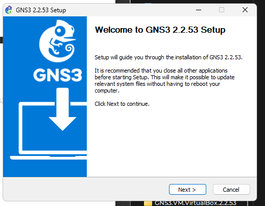 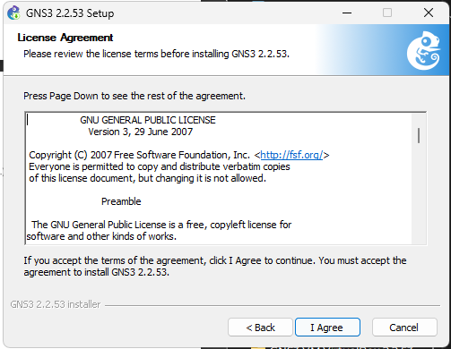 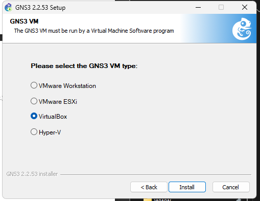 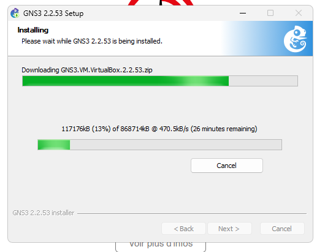 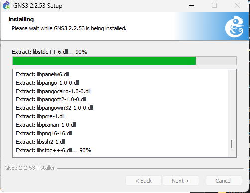 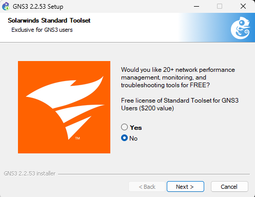
Importation


Nom : PIERRE
Prenom : Yann Lelay
Niveau : L3-Sciences Informatiques
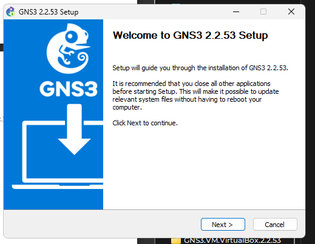 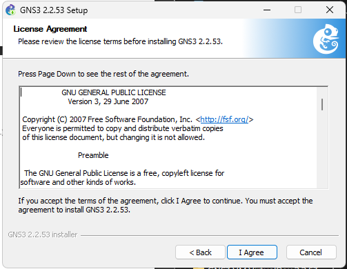 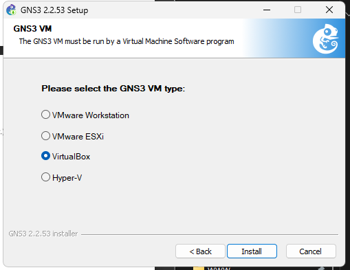 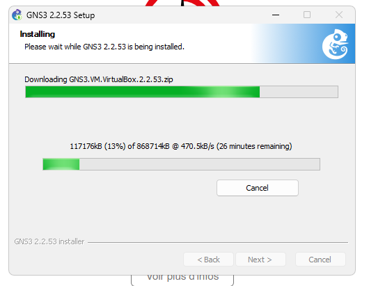 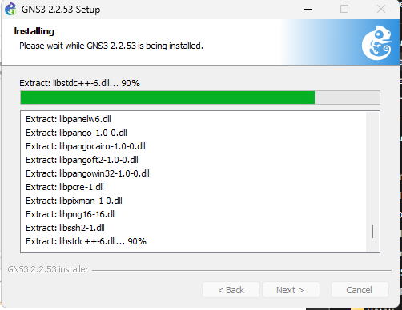 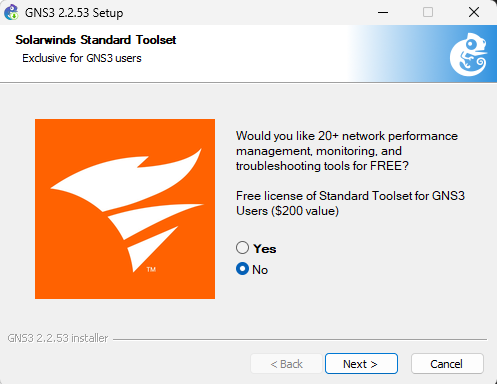
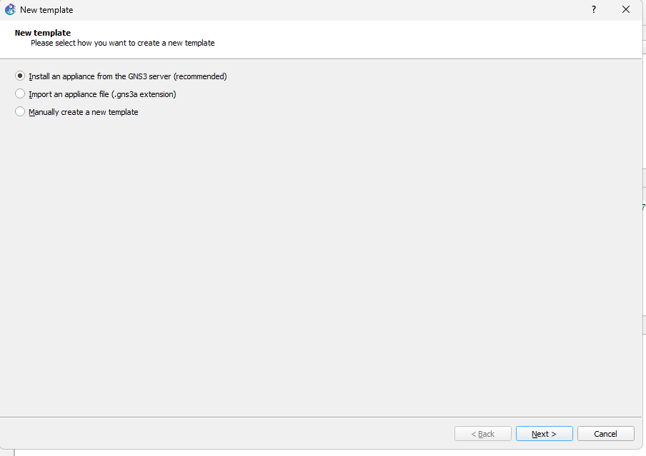 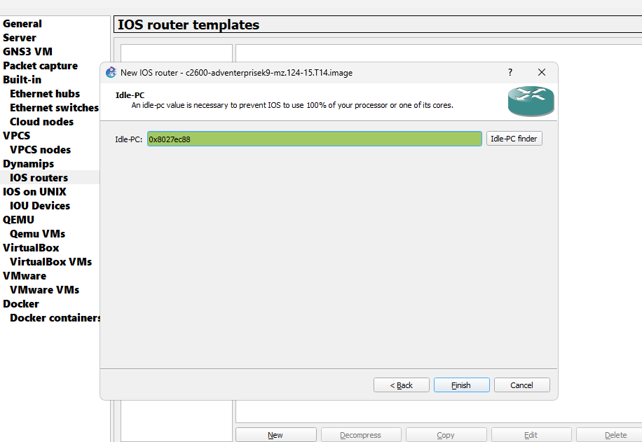 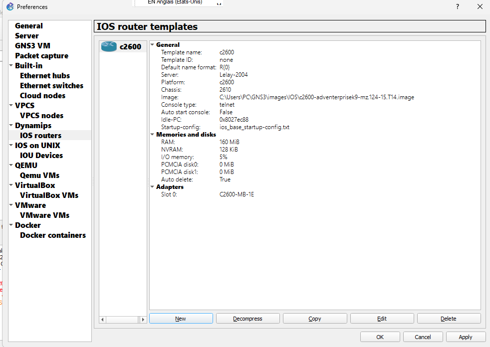 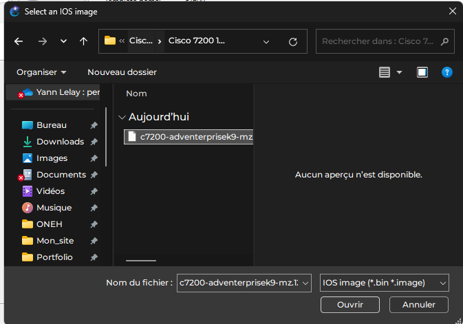 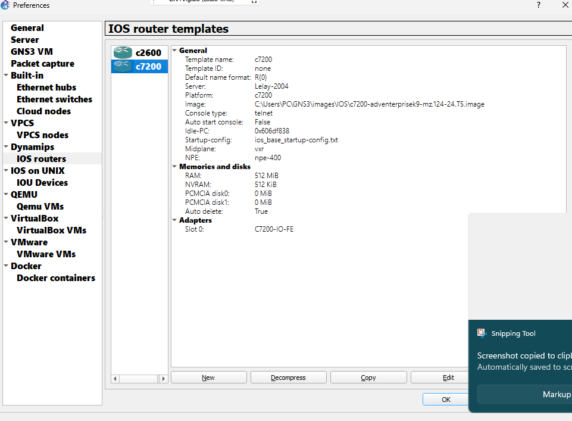
topologie 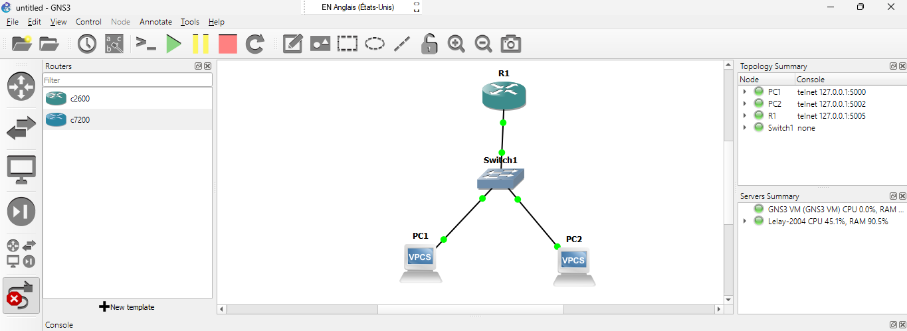
Configuration Routeur 
configuration des PCS
PC1 
PC2 
Test de la connexion 
topologie 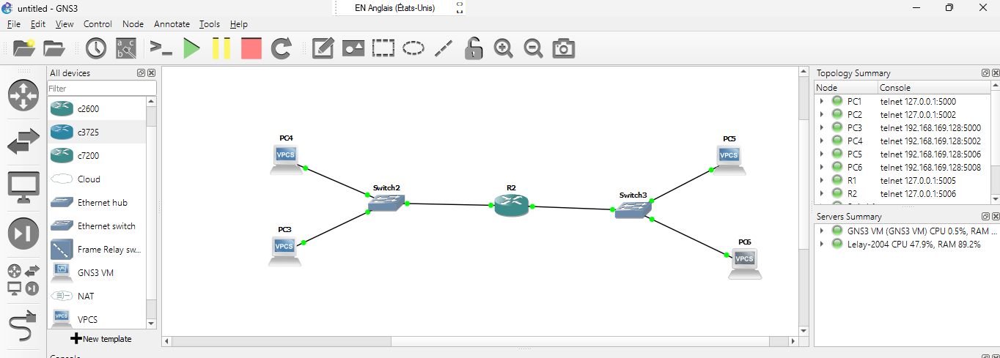
Configuration Routeur 
configuration des PCS
PC3 
PC4 
PC5 
PC6 
Grace a ce td j’arrive par installer GNS3 et l’importer sur une marchine virtuelle (VMware Workstation). Ensuite Faire des ajouts des images de routeurs Cisco . Enfin faire des simulations avec des topologies en configurant des routeurs et des PCS. Ce td me plonge dans une belle aventure avec GNS3.